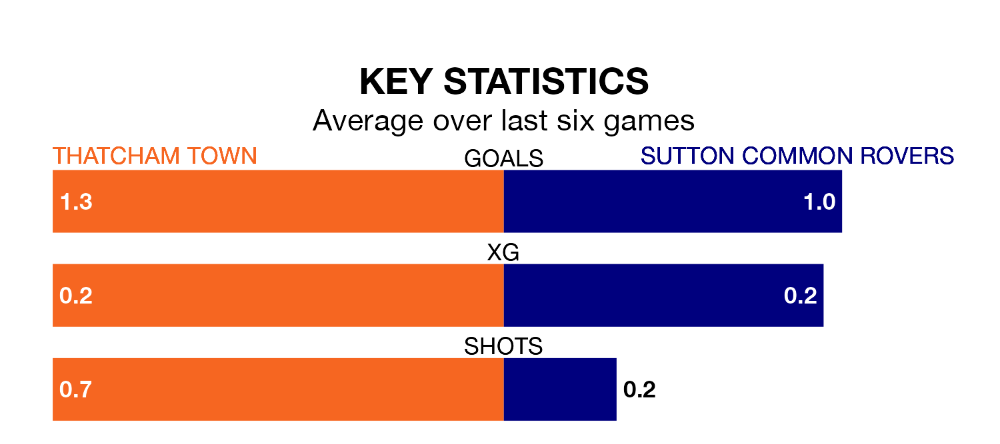

Sutton Common Rovers travel to Waterside Park looking to secure a first win in nine Isthmian League Division One – South Central games against Thatcham Town on Saturday.
Rovers have lost five and drawn three matches since they last earned three points – against Northwood on February 24.
They face a Thatcham side who have won three and drawn three over that time.
With 49 goals in 38 games so far this season, Sutton Common are scoring at below the league average rate with 1.3 goals per game. And they are conceding more than average, letting in 66 goals at a rate of 1.7 per game.
Thatcham, meanwhile, are above average scorers, with 1.7 goals per game, compared to a league average of 1.6. They have conceded 1.6 goals per game.
In the last five years, Thatcham and Sutton Common have played each other on five occasions. Thatcham won one of them, Sutton Common three, and they drew once.
On average, Thatcham scored 1.2 goals and Rovers 1.6 in those matches.
Their last meeting was on December 9, when Thatcham won 3-1 away.
Town are eighth in the table after 38 games, of which they have won 16 and drawn eight, earning 56 points.
Rovers are six places behind the home team in 14th, with 11 wins and seven draws putting them on 40 points.
Thatcham's last match was on April 20, a 0-0 draw against Chipstead.
Sutton Common lost 2-0 against Chertsey Town last time out, also on April 20.
Updated: 07:59 (UTC), 26/04/24